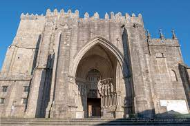

La catedral de Santa María de Tuy es, junto con la concatedral de Vigo, una de las sedes episcopales de la Diócesis de Tuy-Vigo, en Galicia, España. La ciudad de Tuy se localiza en el extremo sur de la provincia de Pontevedra, junto al límite con Portugal, y está bañada por el río Miño. En 1959, el nombre original de la diócesis: "Diócesis de Tuy" fue modificado por el de Diócesis de Tuy-Vigo y se designó como concatedral a la colegiata de Santa María de Vigo. La catedral de Tuy es el máximo exponente artístico de la ciudad y se encuentra situada en la parte más elevada de la ciudad en un castro (Tude) sobre una colina. Su construcción se inició en 1120 y fue finalizada en 1180, en pleno estilo de la arquitectura románica. Tal como ocurrió con numerosas otras catedrales, tuvo reformas importantes en diversas épocas, principalmente en el estilo gótico que modificaron, entre otros aspectos de la catedral, su fachada principal datada aproximadamente del año 1225. Es Bien de Interés Cultural desde 1931.1?
-

- Arte pizza
Este restauran es especializado en comida italiana pizzas (ten de varios tipos dende mexicanas ata as mais comuns) y pastas principal mente.
- Santa Columba
Este restaurante es famoso en tui por el tamaño y calidad de la carne de sus hamburgesas (que a carne procede da carniceria do Cruceiro) y su gran tamaño que suele ser tangrande como la mano de un adulto promedio, tambien tienen un menu del dia que sale a un muy buen precio y trae bebida postre y cafe incluido aparte del primer plato.
Volver a portada
RESTAURANTES DE TUI
OS MELLORES RESTAURANTES DE TUI
Oia Gondmar O Rosal
 |
 |